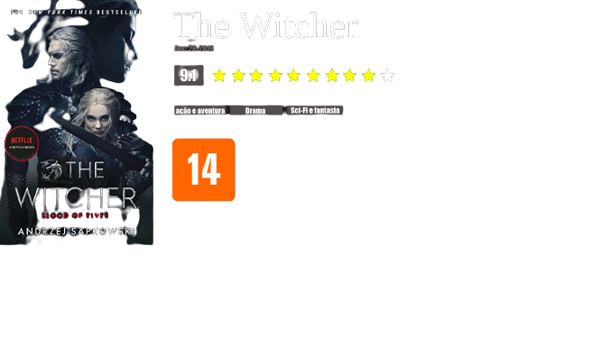

Em The Witcher, série original da Netflix, Geralt de Rivia (Henry Cavill) é um solitário caçador de monstros, que luta para encontrar seu lugar num mundo onde pessoas são mais crueis que criaturas. Mas seu caminho irá cruzar com duas figuras que mudarão sua vida: a feiticeira Yennefer de Vengerberg (Anya Chalotra) e a princesa poderosa Cintran Ciri (Freya Allan). A trama acompanha os três em linhas do tempo diferentes até que finalmente suas vidas são conectadas quando se juntam na Batalha de Sodden Hill contra os invasores de Nilfgaard.
Crítica de usúarios sobre a série The Witcher.